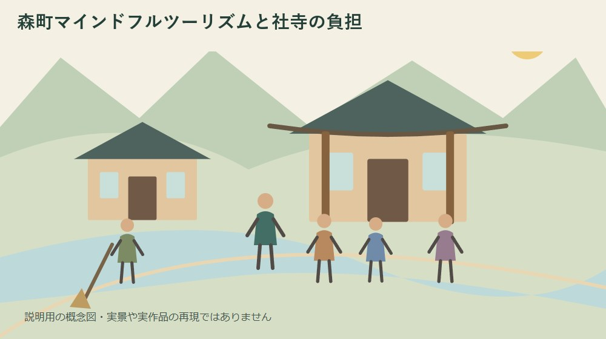
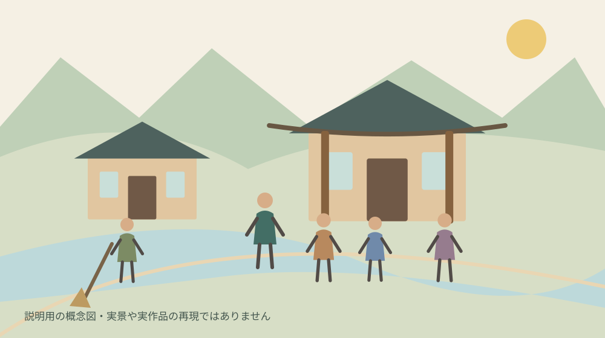
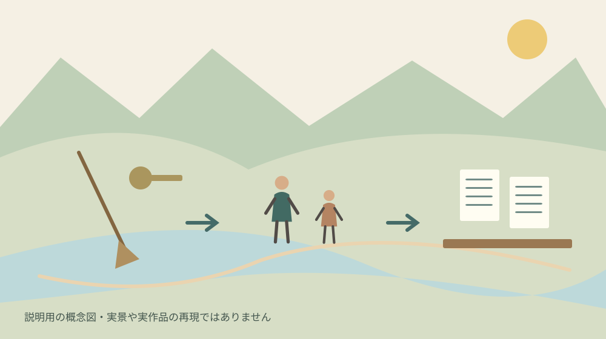

森町マインドフルツーリズムと社寺の負担
／ 寺社・歴史

Q. どんな事業？
株式会社シダックスタジオが2026年8月21日に本格始動を発表した文化体験事業です。少人数・高単価による地域還元を掲げますが、料金や社寺への配分額、実施件数は発表本文では確認できません。協力前に作業分担と支払条件を確かめます。
森町の社寺や伝統文化は、訪問客のためだけに残されてきたものではありません。日々の祈り、清掃、行事、建物の維持を担ってきた方の時間があります。新しい文化体験事業を考えるとき、私はまず、その積み重ねと負担を起点にしたいと思います。
私は大石浩之（磐田市／不動産業）です。森町の土地や家に関わる立場から、地域の場所を使う事業には可能性を感じます。一方で、受入れを増やすだけでは維持が続かない部分もあります。森町マインドフルツーリズムの発表内容と、協力を判断する前に確かめたい仕事とお金を分けて整理します。
8月21日の発表で分かる事業の方向
株式会社シダックスタジオは、2026年8月21日付で森町マインドフルツーリズムの本格始動を発表しています。禅、神社文化、自然信仰などを、海外富裕層向けの体験として提供する事業との説明です。この記事では2026年10月7日に同社の発表本文を確認しました。
発表は、少人数・高単価の設計によって、地域住民の負担を増やさず、事業者や寺社への経済還元を図るという方向を掲げています。北米・欧州の富裕層や経営者層も対象として挙げています。これらは事業者の方針であり、負担軽減や還元がすでに達成されたという実績の数字ではありません。
観光庁の事業に採択されたことも、同社の発表に記載されています。ただし、今回の確認では観光庁側の採択一覧との照合はしていません。採択を事業者自身が報告している、という範囲で紹介します。採択の記述から個別体験の内容や社寺への支払いまで保証されたとは読みません。
発表には、8月21日に町や小國神社、商工会、観光協会の関係者を訪問したことが載っています。挨拶や事業報告の訪問と、体験提供についての契約は別です。名前が挙がっている訪問先を、そのまま予約できる施設や契約済みの受入先の一覧として扱うことはできません。
同社は文化資産や伝統芸能の映像化、体験開発、発信に関する相談も受け付けるとしています。一方、確認した発表本文には、参加料金、催行人数、社寺への配分額、実施件数が示されていません。問い合わせの入口があることと、販売条件を比べられる状態であることは区別します。
森町の文化資産を、自由に使える場所と考えない
森町公式の文化財案内には、建造物、工芸、絵画書跡、民俗など、異なる種類の文化財が掲載されています。所有者や管理者、所在地も示されています。同じ「文化体験」という言葉でくくっても、建物を開けること、芸能を見せること、道具を扱うことは別の仕事です。
森町公式には文化財保存活用地域計画案への意見募集の資料もあります。この記事では地域の文化を考える背景資料として参照しますが、町の資料と今回の民間事業を同一の事業として扱いません。計画の位置付けと地域で残す課題は、森町の文化財保存活用を扱った記事でも整理しています。
私は、訪問先を探す段階で「魅力があるから使える」と飛び越えないことが必要だと考えます。誰が許可を出すか、通常の行事と重ならないか、公開できない場所があるかを先に確認します。写真で見える空間と、事業として継続利用できる空間は、必ずしも同じではありません。
建物の活用という点では、森町の古建築活用を比較した記事も関連します。ただし、飲食や宿泊、見学、宗教文化の体験では、利用目的も必要な準備も異なります。他の施設の成功例をそのまま当てはめず、対象の場所の条件から組み立てます。
良い点は、人数を増やす以外の道を示したこと
森町マインドフルツーリズムの発表で私が評価するのは、来訪者数だけを増やす設計ではなく、少人数と単価、地域への還元を結びつけている点です。静けさや祈りの場を扱うなら、受入れの量を限る発想には意味があります。地域側の作業を収入につなぐ方向も、継続を考える入口になります。
私は、説明や案内を丁寧に行う時間に価値を置けるなら、受入人数だけでは見えなかった仕事を認める機会になると考えます。建物を開ける、資料を準備する、来訪者に伝える内容を確かめる。こうした作業が体験価格の中でどう扱われるかを、地域側が話し合うきっかけにもなります。
映像化の相談を受けるという方針にも可能性を感じます。何を記録し、誰へ伝えるかを整理できれば、現地で毎回同じ基礎説明を繰り返す負担を減らす方法につながるかもしれません。ただし、今回の事業でその効果が実測されたわけではなく、私が考える使い方の一例です。
海外へ伝える作業を地域の担当者だけに任せず、事業者が説明や手配を担えるなら、地域は自分たちが守る内容に集中しやすくなると私は考えます。語学ができる人を一人探せば済む話ではありません。予約、質問、変更、来訪中の案内を誰が受けるかまで分担できて初めて負担の軽減になります。

注文したい点は、少人数でも残る固定の作業
少人数の文化体験でも、鍵を開け、清掃し、案内の準備をする仕事は残ります。私は「少人数だから負担が軽い」と人数だけで結論を出すことには慎重です。人数に関係なく発生する作業と、人数に応じて増える作業を分けて初めて、地域の受入れが回るかどうかを判断できます。
たとえば、来訪者の滞在が短くても、前日に場所を整え、当日早く集まり、終了後に片付けるなら、担い手の拘束は滞在時間を超えます。これは今回の実績を示す話ではなく、検討時の見方です。料金表へ載る体験時間だけで人の負担を見積もらないことを、私は注文したいと思います。
高単価で販売されることと、社寺側の手取りが十分に残ることも同じではありません。販売、通訳、移動、手配、制作など、費用が生じる部分はあります。どの費用を誰が負担し、地域へいつ支払われるかが分からなければ、高い販売価格だけで継続性を評価することはできません。
今回の発表本文では配分額を確認できません。そこで、私は一般論の還元率を作って当てはめることはしません。協力の相談があるなら、固定の準備費、当日の謝礼、追加作業、支払時期を分けて提示してもらう方法を提案します。数字が出ない段階では、引き受ける仕事の上限を決める材料が不足しています。
雨天や交通の乱れ、参加者の都合による取消しも、受入側には準備済みの作業が残る場合があります。誰がどの時点で中止を決め、準備費をどう扱うかは、契約前に確認したい項目です。この記事で本事業の取消条件を確認できたわけではないため、条件があるものとして想像で補いません。

対案・結論：受入前後の仕事を一回分だけ書く
森町マインドフルツーリズムへの協力を考える方が今日できる一歩は、仮に一回受け入れる場合の作業を、前日、当日、終了後に分けて書くことです。所要時間がまだ分からなければ、担当者名だけでも置きます。事業への賛否を先に決めるより、何を引き受ける話なのかを見える形にします。
前日の欄には、清掃、道具の確認、説明資料の準備、関係者への連絡など、実際に必要と考えられるものを置きます。すべての社寺に同じ作業があると決め付けず、その場所の担当者が挙げた内容だけを使います。外から作った標準表に現場を合わせないことが、無理を見つける近道です。
当日の欄には、開閉、案内、通訳との連携、通常の参拝者への対応などを、必要に応じて書きます。事業者が担うと説明した仕事は、地域側の欄と分けます。「協力する」という一言にまとめず、誰が最後まで担当するのかを一行ずつ確認すると、当日の抜けを減らせます。
終了後には、片付け、破損の有無の確認、精算、次回への申し送りを置きます。体験が終わった時刻に地域の仕事も終わるとは限りません。担当者の帰宅までを含めて一回の仕事として見ることで、年間に受け入れられる回数を相談する土台になります。
次に、各作業について、無償で担うのか、謝礼へ含むのか、別途費用を請求するのかを確認します。無償の協力が悪いと一律に決める必要はありません。ただ、本人の合意がある仕事と、いつの間にか頼まれる仕事を区別できなければ、後から負担への不満が残りやすくなります。
受入可能な日を考えるときは、社寺の祭事や地域の行事を先に置きます。文化体験の販売日から逆に地域の予定を動かすのではなく、通常の営みを守ったうえで空けられる範囲を相談します。祭りを支える側の仕事を扱った記事も、見える時間と裏方の時間を分ける参考になります。
収入の確認は、総額と残る額を分ける
文化体験の収入を考える際、私は地域側の受取額から、その受入れのために増える支出を引いて見ます。これは事業の実績を推計した数字ではなく、協力条件を比較するための計算の形です。受取額、追加の消耗品費、外部へ頼む費用などを並べれば、何が未定かも分かります。
担い手の時間は、お金の支出と別に記録します。例として二人が各三時間動けば、合計は六人時間です。この数字は仮定の計算であり、本事業の実績ではありません。一人が三時間と書くより、同時に動く人数を含めるほうが、交代要員を考えるときの負担を表せます。
修繕の積立てへ回す額を考えるなら、受取額の全額を積立可能とは扱いません。当日の費用や継続的に必要な支出との関係を見ます。どの会計へ入れ、誰が確認し、関係者へどう説明するかも合わせて相談します。個別の税務や会計処理の判断は、事情を伝えて専門家へ確認してください。
支払時期も、金額と同じ紙に載せます。準備費を先に立て替えるのか、終了後にまとめて受け取るのかで、地域の手元資金への影響が違うためです。私は、年間の売上見込みより先に、一回目を無理なく回せる資金と担当者を確認する方法が現実的だと考えます。
映像と説明文は、公開できる範囲を先に決める
文化資産の映像化に協力する場合は、撮影できる場所、映してよい物、写ってよい人を先に分けます。日常の参拝と、販売促進に使う映像の撮影は同じ条件とは限りません。この記事で本事業の撮影契約を確認したわけではないため、個別の許可範囲を事業者と所有者で確かめます。
説明文の確認担当も決めておくと、地域の伝承と資料で確かめた歴史を分けて伝えやすくなります。海外向けの翻訳では、分かりやすさのために言い切りが強くなることも考えられます。私は、公開前に地域側が確認する範囲と、修正を頼める手順を用意するよう提案します。
完成した映像をどこで、いつまで使うか、事業が終わった後も公開するかも判断材料です。今回の発表には個別条件が示されていないので、無期限の利用に同意済みとは扱えません。記録として残したい気持ちと、公開したくない範囲を同じ相談で伝える必要があります。
大石の視点：建物を開ける前に、鍵を閉める人を決める
私は、文化を使う事業の良し悪しを、華やかな紹介映像だけでは判断できません。地域へ収入を戻すという方向には賛成できますが、鍵を閉め、清掃し、次の行事へ戻す人まで見えているかを確かめたい。建物を貸す場面と同じく、使った後の状態を誰が引き受けるかが継続を左右すると考えます。
ここは実体験ではなく私の意見です。もし協力条件の紙を前にするなら、私は参加者の滞在時間を囲み、その外側に準備と片付けの時間を書き足します。次に地域側と事業者側を別の色で分けます。売上の見通しを見る前に、名前の書かれていない仕事が残っていないかを確かめるためです。
私にも迷いがあります。条件を細かく決めすぎれば、始める前に話が重くなるかもしれません。一方で、最初の善意へ頼りすぎると、続ける人が疲れてしまう。だから私は、いきなり年間の約束を固めるより、一回分の仕事と費用を具体的にして、双方が見直せる形を相談したいと思います。
少人数は、少作業を保証しません。この点は言い切れます。現時点で配分額や実施件数が分からない以上、この事業が地域負担を減らしたと私は断定できません。今日できるのは、一回分の受入作業を紙に出すことです。その紙があれば、賛成するにしても保留するにしても、判断の材料が増えます。
FAQ
森町マインドフルツーリズムはどんな事業ですか？
株式会社シダックスタジオが2026年8月21日に本格始動を発表した、森町の禅や神社文化、自然信仰などを海外富裕層向けの体験として提供する事業です。少人数・高単価と地域への経済還元を掲げています。この記事は事業者発表の確認であり、負担軽減を達成した実績や個別体験の販売条件を確認したものではありません。
社寺にはいくら支払われますか？
2026年10月7日に確認した事業者発表本文には、社寺への配分額や具体的な支払条件が示されていません。参加料金、催行人数、実施件数も未確認です。協力を判断する前に、準備費、当日の謝礼、追加作業、取消時の扱い、支払時期を確認してください。高単価という方針だけから、地域側の手取り額を推計することはできません。
発表に名前がある訪問先で体験を予約できますか？
発表に記載された関係者への訪問は、事業の報告や挨拶として紹介されています。訪問先が契約済みの体験提供施設であることや、一般向け予約を受け付けていることまでは確認できません。施設へ直接押しかけず、まず事業者の案内で販売状況や相談先を確かめてください。訪問の事実と受入契約は別に扱います。
出典・確認日
- シダックスタジオ・2026年8月21日の事業発表（2026年10月確認／確認日：2026-10-07）
- 森町・文化財保存活用地域計画案の意見募集（2026年10月確認／確認日：2026-10-07）
- 森町・文化財案内（2026年10月確認／確認日：2026-10-07）
最終確認日：2026-10-07。制度・日程・数値・受付条件は変わる場合があります。最新情報は発信主体へ確認し、修復・権利・税務などの個別判断は適切な専門家へご相談ください。